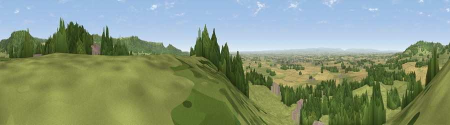

Viewpoint near Felixkirk
#3898 in England · top 12% of its area beats it · near FelixkirkThe view, rendered

A 360° render of this exact spot computed from the terrain model, tree cover and land cover — summer colours, afternoon light, calibrated against photographs of famous viewpoints. Real trees, hedges and buildings will differ in detail.
The panorama
Grey silhouette: terrain skyline in each direction (720 bearings, Earth curvature and refraction included). Dashed green: skyline with trees (+15 m) and buildings (+8 m) as obstacles. Blue strip: how far the ground is visible on each bearing.
Where the view opens
Wedge length = distance to the farthest visible ground on that bearing (vegetation-aware). Rings at 10, 25 and 50 km.
What fills the view
48% grassland · 27% woodland · 22% cropland · 3% built-up
Angular shares of the visible panorama (visual magnitude), not map area. Landscape diversity 0.50 (0–1 Shannon).
Key numbers
More beautiful places nearby
The staircase of upgrades: each row has a higher view potential than everything closer. Driving times are estimates from straight-line distance, calibrated against real road routing — check an actual route before setting out.
| Place | Direction | Drive | Score |
|---|---|---|---|
| Viewpoint near Felixkirk | S · 0 km | ~1 min | 73.3 |
| Wind Egg | NNE · 2 km | ~6 min | 77.8 |
| Viewpoint near Kirby Knowle | NNW · 3 km | ~8 min | 80.5 |
| Viewpoint near Thirlby | ESE · 4 km | ~9 min | 81.2 |
| Viewpoint near Thirlby | ESE · 4 km | ~9 min | 81.5 |
| Beacon Hill | N · 15 km | ~27 min | 84.7 |
| Carlton Bank | NNE · 18 km | ~32 min | 85.1 |
| Roseberry Topping | NNE · 30 km | ~47 min | 85.8 |
54.25694, -1.27890 · source: screening · position refined by local search. Computed location — check access rights before visiting.